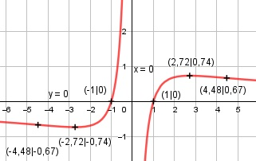

Aufgabe 158 ln x2 2 * ln |x| f(x) = ------- = ------------ x ≠ 0 x x Quotientenregel erste Ableitung: 2 u = ln x2 = 2 * ln x, u' = --- x v = x, v' = 1 2 ---- * x - 1 * ln x2 x f'(x) = ------------------------ x2 2 - ln x2 f'(x) = ----------- x2 Quotientenregel zweite Ableitung: 2 u = 2 - ln x2 = 2 - 2 * ln x, u' = - --- x v = x2, v' = 2x 2 - ---- * x2 - 2x * (2 - ln x2) x f''(x) = --------------------------------- x4 -2 * x - 4 * x + 2x * 2 * ln x f''(x) = ---------------------------------- x4 x * (- 2- 4 + 4 * ln x) f''(x) = ------------------------- x4 4 * ln x - 6 f''(x) = -------------- x3 Zur Beurteilung, ob f'''(x) ≠ 0: (Begründung siehe Aufgabe 105) 4 u = 4 * ln x - 6, u' = --- x 4 --- u' x 4 f'''(x) = --- = ----- = ---- ≠ 0 für x ≠ 0 v x3 x4 Definitionsbereich: -∞ < x < ∞, x ≠ 0 Polstelle: Für x --> 0 geht f(x) --> ± ∞ x = 0 Waagerechte Asymptote: 2 * ln x --------- geht gegen 0 für x --> ± ∞ x Wertebereich: -∞ < f(x) < ∞, f(x) ≠ 0 Symmetrie zur y-Achse bzw. zum Punkt (0|0): ln (-x)2 ln x2 f(-x) = ----------- = - ------- ≠ f(x) -x x --> keine Achsensymmetrie ln x2 -f(-x) = -------- = f(x) x --> Punktsymmetrie Nullstellen: f(x) = 0 ln x2 ------- = 0 |*x x ln x2 = 0 x2 = e0 = 1 |ⱱ x1,2 = ± 1 N1(1|0), N2(-1|0) Schnittpunkt mit der y-Achse: x = 0 liegt nicht im Definitionsbereich --> kein Schnittpunkt Extrempunkte: f'(x) = 0 2 - ln x2 ---------- = 0 |*x2 x2 2 - ln x2 = 0 |+2 ln x2 = 2 x2 = e2 |ⱱ x1,2 = ± e = ± 2,72 x1 = 2,72 ln e2 2 f(2,72) = ------- = ------ = 0,74 2,72 2,72 4 * ln (e) - 6 f''(2,72) = --------------- < 0 2,72 --> Tiefpunkt (2,72|0,74) Wegen Punktsymmetrie: Hochpunkt (-2,72|-0,74) Wendepunkte: f''(x) = 0 4 * ln (x) - 6 ---------------- = 0 |*x3 x3 4 * ln (x) - 6 = 0|+6 4 * ln x = 6 |:4 ln x = 1,5 x = e1,5 = 4,48, ln (e1,5)2 f(4,48) = ----------- = 0,67 --> 4,48 WP1(4,48|0,67) Wegen Punktsymmetrie: WP2(-4,48|-0,67) Graph:
